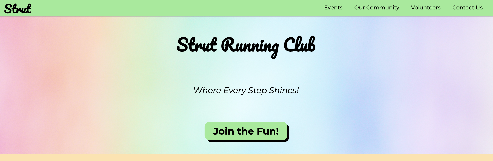
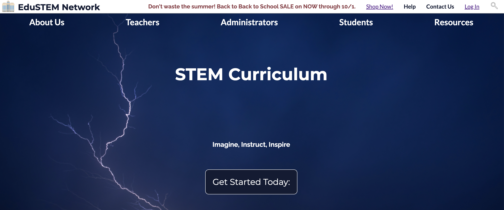
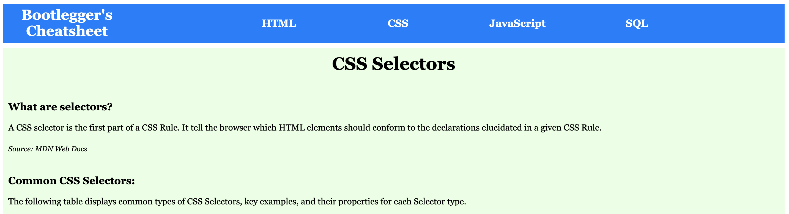

henry alford
where:
contact me:
Projects
Strut Running Club
From-scratch website designed for the queer Phoenix running community.
Skills Used: HTML, CSS, Responsive Web Design
See More:
eduSTEM Curriculum Network
Professional styles for an educational group providing resources to districts and teachers
Skills Used: HTML, CSS, Web Design Fundamentals
See More:
Bootlegger's Cheatsheet
Coding resource providing information on common CSS Selectors
Skills Used: HTML, CSS, Web Design Fundamentals
See More:
Skills:
As a science teacher, I'm fascinated by the intersection of technology and human creativity, and how each can transform the learning process. My journey into web design began with a desire to create engaging, interactive resources for my students.
Through self-study and hands-on practice, I've developed skills in HTML, CSS, JavaScript, and accessible web design, blending my scientific background with creativity and technical proficiency. Now, I'm excited to share my combined love for teaching and technology to create impactful digital experiences.